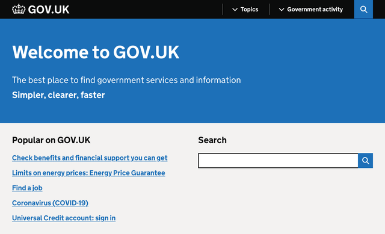
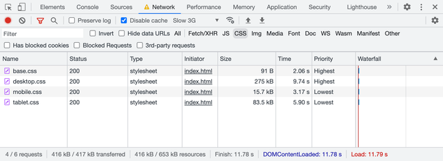
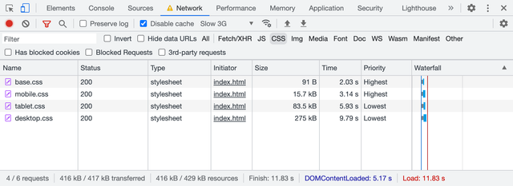
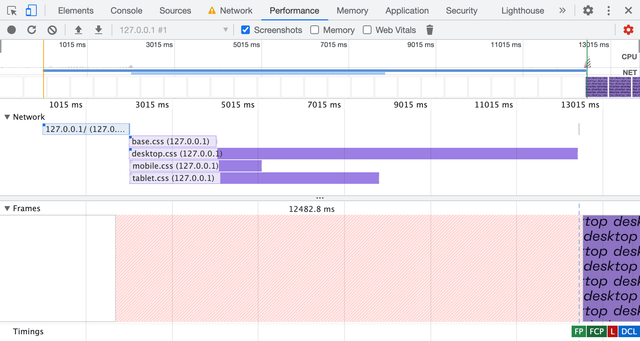
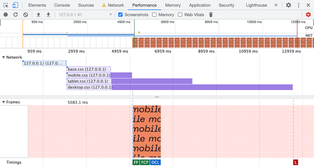
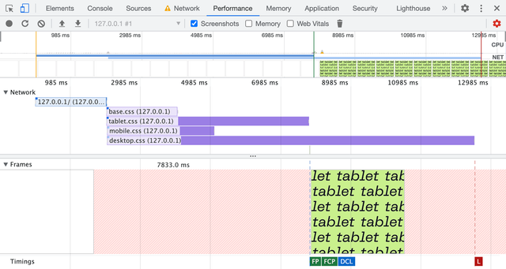
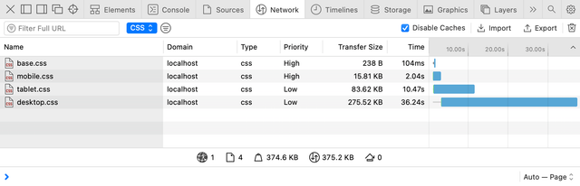
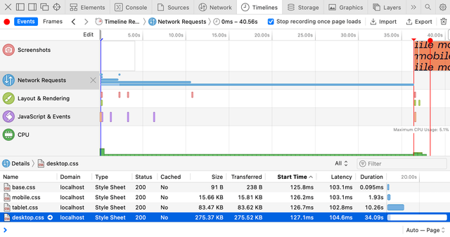
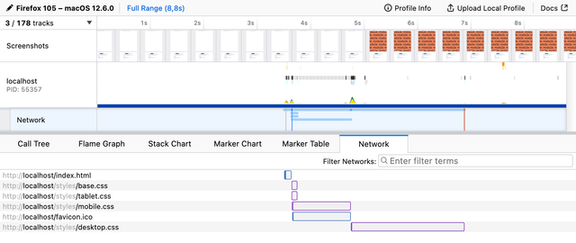

There’s a component structure behind every website or app these days, hundreds of small files. Though when it comes to delivering resources, we often serve just a single file for every resource type: styles, scripts, and even sprites for images. Everything gets squashed during the build process, including resources specific to certain resolutions or media conditions.
And resources aren’t equal! For example, CSS is a blocking resource, and there’s nothing for a browser to render until every last byte of every CSS file is loaded. Why? The last line of a CSS file could overwrite something that came just before that. That’s your “C” in the CSS, which stands for “cascade.”
We live in the era of responsive web design, and our websites are often ready to adapt to different viewports. Isn’t it wonderful? But why should users wait for irrelevant desktop styles when they load your site on mobile? 🤔
Hold that thought, we’ll get back to it. Now let’s have a look at one popular website.
GOV.UK

If you open GOV.UK website and peek into the DevTools Network panel, you’ll find four CSS files loaded, around 445 KB in total. The browser is supposed to wait for all of them to load before it can start rendering the page. That’s a lot of CSS, but I guess it’s all you’d ever need on this website.
- edefe0a8.css — 177.65 KB
- 9618e981.css — 5.90 KB
- 18950d6c.css — 201.04 KB
- 59083555.css — 60.93 KB
Apparently, only two are render-blocking, which makes the critical path around 67 KB shorter. What’s the trick? These two files are used only for printing and are linked with the proper media attributes.
<link rel="stylesheet" href="edefe0a8.css">
<link rel="stylesheet" href="9618e981.css" media="print">
<link rel="stylesheet" href="18950d6c.css">
<link rel="stylesheet" href="59083555.css" media="print">Browsers are smart enough not to prioritize resources that aren’t relevant to the current media conditions. When you’re in media="screen" and about to render something on the screen there’s no point in waiting for styles with media="print", right?
They could’ve bundled all four files, hiding print styles inside @media print. But instead (intentionally or not) GOV.UK developers saved their users some time.
When I discovered this behavior, I immediately asked myself…
What if?
What if we’d take the CSS bundle we’ve just built out of dozens of files and split it back into multiple parts? But this time, based on conditions where these parts are applicable. For example, we could split it into four files:
- Base: universal styles with fonts and colors
- Mobile: styles only for narrow viewports
- Tablet: styles only for medium viewports
- Desktop: styles only for large viewports
This would look like this:
<link rel="stylesheet" href="base.css">
<link rel="stylesheet" href="mobile.css">
<link rel="stylesheet" href="tablet.css">
<link rel="stylesheet" href="desktop.css">But this won’t be enough, as we need to specify media conditions with the same media attribute, using not just media types like print, but media features. Yes, you can do that! 🤯
Let’s say our tablet breakpoint starts at 768 px and ends at 1023 px. Everything below goes to mobile, and everything above goes to desktop.
<link
rel="stylesheet" href="base.css"
>
<link
rel="stylesheet" href="mobile.css"
media="(max-width: 767px)"
>
<link
rel="stylesheet" href="tablet.css"
media="(min-width: 768px) and (max-width: 1023px)"
>
<link
rel="stylesheet" href="desktop.css"
media="(min-width: 1024px)"
>It would be much easier to write using the modern syntax, but I’d be careful for now: browsers are still catching up on the support, and loading CSS is rather critical.
(width < 768px)(768px <= width < 1024px)(width >= 1024px)
When I opened this demo in a browser, I expected it to load only relevant files, for example, only base.css and mobile.css on mobile. But all four files were loaded, and I was disappointed at first. Only later I realized that it works, but in a much more sensible way 😲
Demo
To fully understand how it works, I built a demo page with four CSS files that paint the page with different background colors on different viewport widths. These files also have different sizes, so spotting them in the Network panel would be easier.
The first base.css is quite small, only 91 bytes:
html, body {
height: 100%;
}
body {
margin: 0;
background-position: center;
}Then goes mobile.css, slightly bigger (16 KB), but only because I artificially made it so by inlining the bitmap “mobile” word with base64 as a background image.
body {
background-color: #ef875d;
background-image: url('data:image/png;base64,…');
background-size: 511px 280px;
}I made both tablet.css (83 KB) and desktop.css (275 KB) even larger with bigger images inlined. You can play with the demo by resizing the window to get the idea. It’s going to help us understand how browsers prioritize CSS loading.
Priorities
Another little detail in the Network panel made me realize what was going on: the Priority column. You might have to enable it by right-clicking the table heading and choosing it from the list of available columns.

It took a surprisingly long time for this page to load, almost 12 seconds. It’s because I disabled the cache and throttled the network to “Slow 3G”. I keep it enabled in my DevTools because it reminds me of real-world network performance 😐
You might’ve guessed where these priorities come from. All CSS files linked to the page are evaluated during HTML parsing:
- The ones with
mediaattribute relevant to the current conditions (or without one, which makes itmedia="all") get loaded with the highest priority. - The ones with
mediaattribute irrelevant to the current conditions (likemedia="print"or(width >= 1024px)on mobile) are still loaded, but with the lowest priority.
In the first case, I used desktop viewport width. What will happen if I load the same page in the mobile viewport? You’ll get the same files loaded but with different priorities: base.css and mobile.css are the highest priority.

But it’s not just loading priority, it also affects the moment when the browser decides that it got everything it needs to render the page. Let’s go to the Performance panel in Chrome DevTools and see the waterfall and all the relevant page rendering events.
Rendering
The Performance panel is relatively complex compared to the Network one. I’m not going to go into details here, but to analyze performance, it’s essential to read waterfalls and see when certain events happen, not just what files are loaded and how heavy they are. Let’s unpack the basics of what’s going on here 🤓

This page is loaded in a desktop viewport, and the first thing we see on the waterfall is the blue line: this is our HTML document requested by the browser. At the point where it’s loaded and parsed, we get four parallel requests for CSS files, all with different lengths. The order is the same as in the Network panel: base.css and desktop.css go first.
There’s a Frames panel below the waterfall showing when the browser paints something on the page. At the bottom of this panel, we have a group of flags marking some of the important events: FP (First Paint), FCP (First Contentful Paint), L (Load), DCL (DOMContentLoaded). In this case, everything happened at the same time, once desktop.css was loaded.
I used a desktop viewport to load this demo, so the browser had to wait for base.css and desktop.css to load before it could render anything (almost 12.5 seconds). And since desktop.css is rather large and CSS files are loaded in parallel, the browser had a chance to load them all. So it’s hard to tell whether it worked better than just a single file with all the styles.
Let’s load the same page in the mobile viewport, then.

Now it looks much more interesting! 😍 The order of CSS files is the same as we saw in the Network panel: base.css and mobile.css go first. But now it finally makes the difference: FP, FCP, and even DCL events happened right after the mobile.css was loaded. The whole rendering took only 5 seconds, compared to 12.5 seconds in the previous case.
The rest of the CSS files extend beyond the rendering events so that the page will be ready for any viewport changes. This is a rare event on mobile but often happens on desktop or tablets. Speaking of tablets, let’s see how it looks in a tablet viewport.

No surprises here: the page is ready to be rendered once tablet.css is loaded in 8 seconds, still faster than it would take for a single file with all the styles to load.
Like any other demo, this one shows the browser’s behavior in a specific case. I doubt that in your case desktop.css would be dozen times bigger than mobile.css and you’ll see a 7.5 seconds difference with the “Slow 3G” throttling. But at the same time, I can see the potential of this behavior, though it’s not widely known or used.
It will also require you to write your CSS in a way that isolates styles for different viewports. That’s another idea for an article, by the way. The same goes for tooling: it’s not quite there yet. The closes thing I could find are Media Query plugin for Webpack and Extract Media Query plugin for PostCSS.
Fortunately, there are some other simpler use cases apart from different viewports that we might start from. Oh, and there’s another catch, of course 🙄 But let’s talk about the use cases first.
Preferences
The list of media features you can use in Media Queries extends beyond just viewport width and height. You can adapt your website to the user’s needs and preferences: color scheme, pixel density, reduced motion, etc. But not only that! With this new behavior in mind, we can make sure that only relevant styles are render-blocking.
Color scheme
One of the most popular media features these days is prefers-color-scheme, which allows you to supply light and dark color schemes to match the user’s system preferences. In most cases, it’s used right in CSS as @media, but it can also be used to link relevant CSS files conditionally.
<link
rel="stylesheet" href="light.css"
media="(prefers-color-scheme: light)"
>
<link
rel="stylesheet" href="dark.css"
media="(prefers-color-scheme: dark)"
>And just like we’ve learned before, browsers will load dark.css with the lowest priority in the case when the user prefers a light color scheme and vice versa. There’s a good article by Thomas Steiner diving deep into the dark mode, including a theme toggler that works with CSS files linked this way.
Pixel density
Sometimes we have to deal not with beautiful vector graphics, but with raster images too. In this case, we often have different files for different pixel densities, for example, icon.png and icon@2x.png.
a {
display: block;
width: 24px;
height: 24px;
background-image: url('icon.png');
}
@media (min-resolution: 2dppx) {
a {
background-image: url('icon@2x.png');
background-size: 24px 24px;
}
}These six lines of CSS specifically targeting high-density screens are usually bundled into the same file loaded for users with low-density screens. Fortunately, browsers are smart enough not to load high-density graphics. You guessed it, we can do it even better: split them into a separate file and load it with the lowest priority.
<link
rel="stylesheet" href="retina.css"
media="(min-resolution: 2dppx)"
>This file will be loaded and applied immediately if the user decides to drag the browser window to a high-density screen. But it won’t block the initial rendering on a low-density screen.
Reduced motion
Animations and smooth transitions could improve user experience, but for some people they can be a source of distraction or discomfort. The media feature prefers-reduced-motion allows you to wrap your heavy motion in @media to give users a choice. By the way, “reduce” doesn’t mean “disable”, it’s up to you to create a comfortable environment and not sacrifice clarity at the same time.
<link
rel="stylesheet" href="animation.css"
media="(prefers-reduced-motion: no-preference)"
>Instead, you can put your motion-heavy styles into a separate file that will be loaded with the lowest priority when the user prefers reduced motion. The best way to achieve this would be to extract all the matching @media during the build process.
A catch
There’s always a catch, isn’t it? 🥲 In this case, it’s the browser support: unfortunately, my tests show that Safari doesn’t support this behavior. Even in GOV.UK’s case, it blocks initial rendering until all the print styles are fully loaded. Fortunately, it doesn’t brake anything, but still, it’s a missed opportunity for performance improvement.

Interestingly, Safari sets the same priorities as Chrome, but it doesn’t change the overall behavior. And if you look at the Timeline panel, it becomes obvious: the first paint for mobile viewport happened only when desktop.css was fully loaded.

I filed a bug report in WebKit a few months ago, asking for a behavior change. They closed it as a duplicate in favor to this one. Please have a look, and if you have some real-life use cases, don’t hesitate to share them in the comments. So far, I have gotten some attention from WebKit engineers, but no actions yet.
At this point, I’m very grateful to Firefox for supporting this behavior. Otherwise, it would be just a peculiar Chrome optimization that’s not worth relying on too much. Though it wasn’t easy to work with the Performance panel in Firefox, with the help of the Network panel’s throttling settings, I got a clear picture. In the mobile viewport, Firefox starts rendering before the desktop.css is fully loaded.

And just to double-check that my readings are correct, I loaded the demo with a slow static server called slow-static-server 😬 and got the same results: Chrome and Firefox render the page in mobile viewport much earlier than Safari does.
I think this might be a good opportunity to optimize the initial page rendering performance. And maybe even improve the way you adapt your styles to different media conditions. But if you’re not ready to invest in this optimization just yet, I’d encourage you to at least try exploring user preferences. There’s a nice “Build user-adaptive interfaces with preference Media Queries” codelab by Adam Argyle that will help you get started.
Last updated on